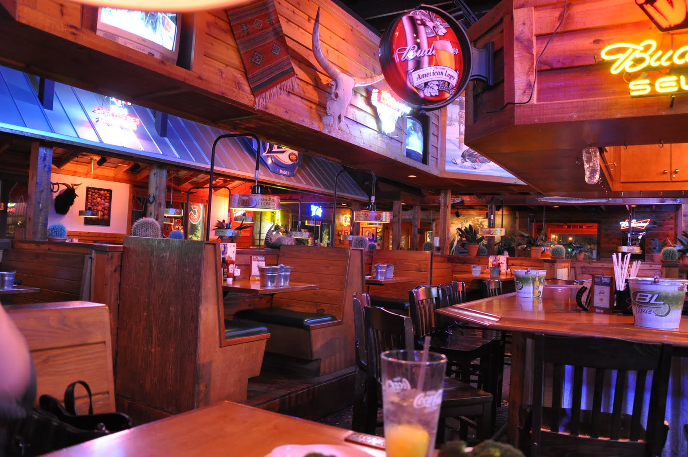

Where chicken is just the tip of the iceberg.
Come join us on July 4th to celebrate our 27th anniversary! We’re in going all in this year with our new Patriot buffalo sauce! We’ve completely revamped the menu with red and blue spicy buffalo sauce and that’s not all. W’re bringing back a fan favorite. The sweet and tasty buffalo Skittles are making a comeback this season. Check out the gallery to see what you’re missing.
Although there are many options to choose from, what seperates us from our competitors is not really are chicken, but our buffalo sauce. Compared to other business, we look to step over the boundaries and bring new creative ideas to our food. Without a tasty suace, it doesn't matter how well the food taste, it's always gonna feel like it's missing something. That's where we come in. Our team has spent years and years in the kitchen crafting what New York Times says "The best buffalo sauce you mom never made!"
We've been ranked number one in the country for not just our food, but service. Making sure you experience is just as good as the food is priority number one. Our staff is ready to fufill your every need. Our facility has been renovated to accomidate larger guess. New furniture and tvs so you can sit and enjoy what we have to offer.
We've been in business for 27 years now and our vision has always been to enhance the flavoring of buffalo sauce. We have a passion for what we do and our customers can see it the minute the taste our food. It all started when I was helping my mom prepare dinner and mistakenly added ingridients that would inspire me to pursue my true calling. After that many years have been spent in the kitchen to come up with new an creative ways to push the boundaries of buffalo sauce. If there's one thing you can count on, it's that its always been about the buffalo
